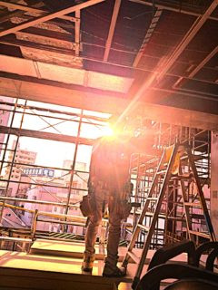

Company
Company
Company
会社概要
COSMO電設は、代表 大橋 明が2019年に独立して立ち上げた電気工事会社です。

Message
次の現場でも、声をかけてもらえる電気屋でありたい
15歳でこの仕事に入り、26年間、病院や工場、倉庫、公共施設といった現場で電気工事に携わってきました。2019年に独立し、COSMO電設を立ち上げました。
私が大切にしているのは、現場がスムーズに回ることです。電気工事は、他の業種との取り合いや工程の変更が多い仕事です。だからこそ、先を読んで準備し、電気が原因で全体の工程が止まらないように動きます。
元請さんのご要望は、まずしっかり聞いて、できる限り形にします。そのうえで、もっと良い納まりや手順があれば、監督さんの年齢に関係なく「提案」としてお伝えしています。言われたとおりにやるだけでなく、一緒に現場を良くしていける関係でいたいと思っています。
一度きりのお付き合いではなく、「次の現場もCOSMOさんに」と言っていただけるよう、一件一件の現場に責任を持って向き合います。
COSMO電設 代表 大橋 明
Profile
代表プロフィール
| 代表 | 大橋 明(おおはし あきら) |
|---|---|
| 経歴 | 15歳で電気工事の道に入る。病院・工場・倉庫・公共施設などの電気工事に従事し、現場経験26年。2019年に独立、COSMO電設を創業。○○○○年に建設業許可を取得 |
| 保有資格 | 第一種電気工事士 |
Values
大切にしていること
01
見えなくなる所こそ丁寧に
天井や壁の中に隠れる配線・配管ほど、手を抜かずに施工します。検査で手戻りが出ない仕上がりが、元請様の工程を守ります。
02
段取りで現場を助ける
着工前の打合せで、取り合いと工程を確認します。変更が出たときも、早めにご相談して代わりの段取りを考えます。
03
聞いて、応えて、提案する
ご要望は可能な限り形にします。より良い方法があれば、押しつけではなく提案としてお伝えします。
Outline
会社概要
| 屋号 | COSMO電設 |
|---|---|
| 代表 | 大橋 明 |
| 創業 | 2019年 |
| 所在地 | 〒000-0000 埼玉県志木市本町○○ |
| 電話 | 000-0000-0000(受付 ○:○○〜○○:○○) |
| 事業内容 | 病院・工場・倉庫・公共施設などの電気工事(幹線・動力、配線・配管、盤まわり、仮設電気、計装、高圧ケーブル端末処理) |
| 建設業許可 | 埼玉県知事許可(般-○)第○○○○号 電気工事業 |
| 登録電気工事業者 | 登録番号 ○○○○ |
| 体制 | 代表+専属の職人 ○名 |
| 対応エリア | 東京23区を中心に、埼玉県南部(その他はご相談) |
| コーポレートサイト | https://www.cosmo-den.com/ |
Join Us
一緒に働く仲間
COSMO電設では、一緒に現場に入る仲間も募集しています。電気工事の経験がある方、箱物の現場で腕を磨きたい方は、お問い合わせフォームの「その他」からご連絡ください。
Access
COSMO DENSETSUELECTRICAL WORKSHIGH VOLTAGEFOR CONTRACTORSCOSMO DENSETSUELECTRICAL WORKSHIGH VOLTAGEFOR CONTRACTORS
 CONTACT
CONTACT